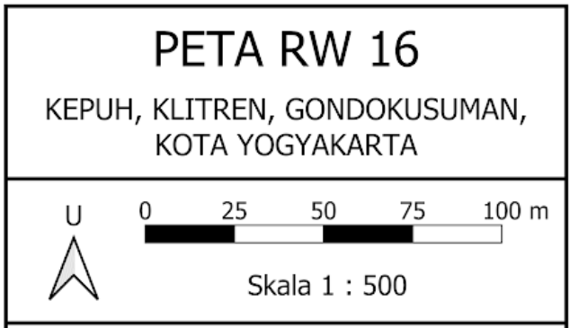
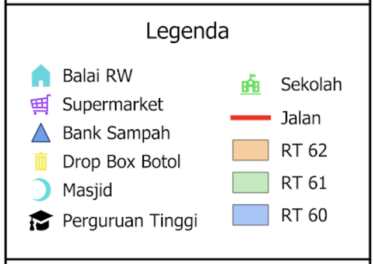
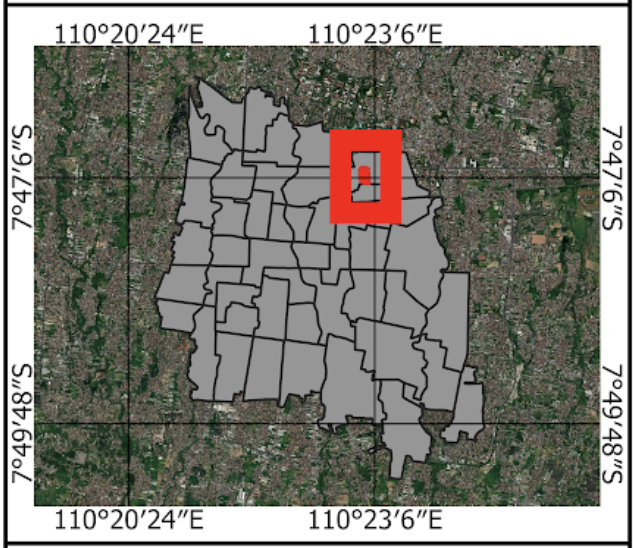
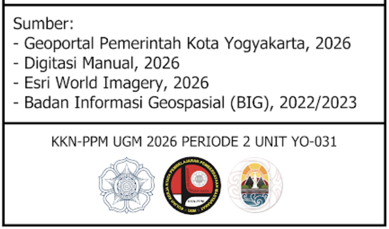

Peta PDF
Peta Wilayah RW 16
Pembuatan peta wilayah yang menampilkan batas RT dan RW, jaringan jalan, fasilitas umum, titik dropbox, serta lokasi penting lainnya sebagai media informasi bagi warga.

zoom_in
Dokumentasi



